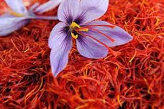
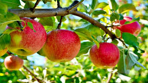

Overview
Jammu and Kashmir, nestled in the Himalayas, is famous for its organic farming practices focusing on high-value crops like saffron and apples.
Kashmiri Saffron
Pampore in the Kashmir Valley is globally renowned for cultivating the world's finest saffron. Organic farming methods ensure the crop retains its purity, aroma, and medicinal value.
Organic Apples
The apple orchards in districts like Shopian, Anantnag, and Baramulla are increasingly adopting organic practices. These apples are exported globally for their taste and quality.
Sustainable Farming Initiatives
- Government-backed organic farming clusters
- Zero-chemical fertilizer initiatives
- Training for farmers on bio-fertilizers and eco-pest control
Export Potential
Both saffron and apples from Jammu and Kashmir are highly valued in international markets, especially Europe, the Middle East, and Southeast Asia.
Jammu and Kashmir's organic produce reflects its heritage, biodiversity, and growing commitment to sustainable agriculture.
← Back to Map